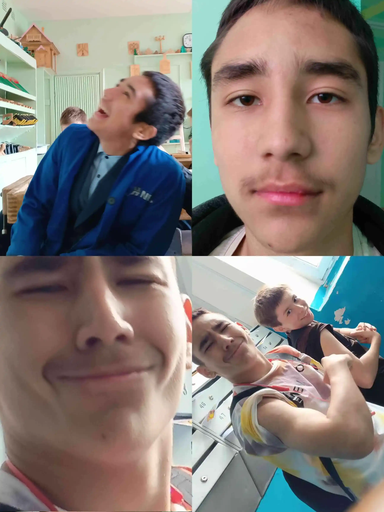

лор ильяса
Ильяс это человек с очень, очень тёмным прошлым.
Достоверно неизвестно, в какой стране он родился, но известно, что в Африке.
По его собственным словам, он нигерийский принц.
И с самого детства, и я в этом уверен, иначе бы он просто не выжил он был окружён литрами чистой воды.

В возрасте 10 лет, ещё не зная русского языка, он переехал в Россию специально, чтобы его изучать. Благодаря своему тёмному и очень тёмному прошлому он справился с нагрузкой и выучил русский.
Но переезд в Россию вскружил ему голову. Он стал вором в загоне, начал мутить тёмные темы, играть в азартные игры и употреблять вещества.
После девятого класса он пошёл в машинку. Неизвестно, чем это закончится, но он уже стал старостой. А еще теоретически получил шесть двоек по химии за то, что нихуя не делал. А еще первый же день его вызвали к директору писать объяснительную.
В заключение скажу, каким бы черным ильяс не был, что бы он там неговорил,
он мне должен 200 рублей.
Ильяс где мои 200 рублей